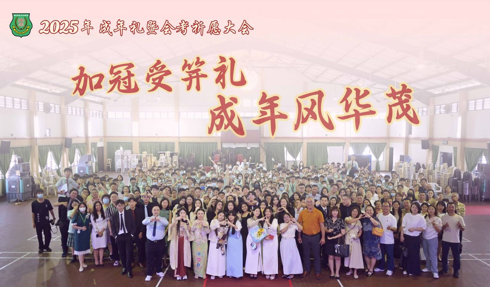
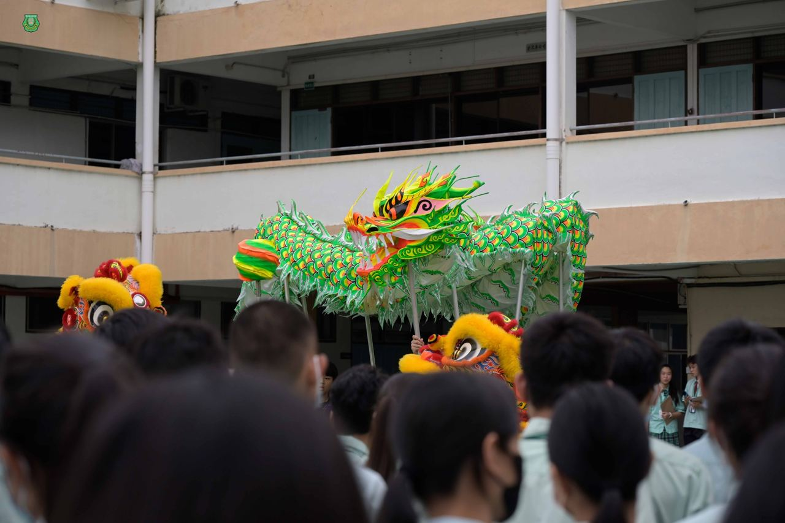
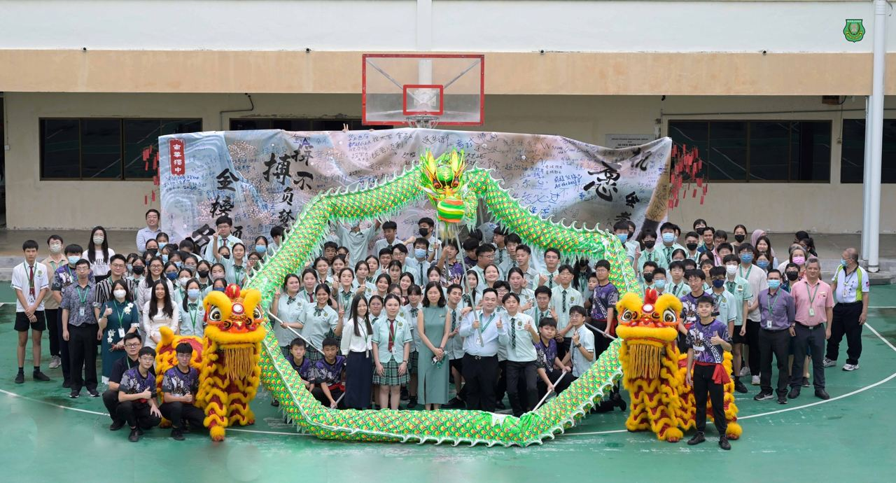
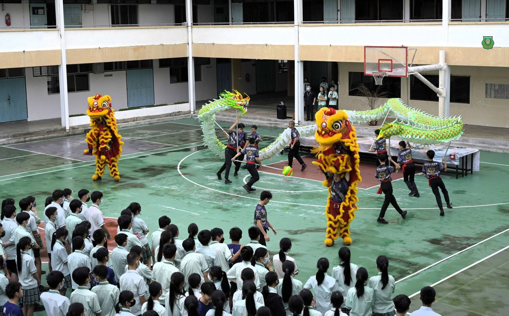
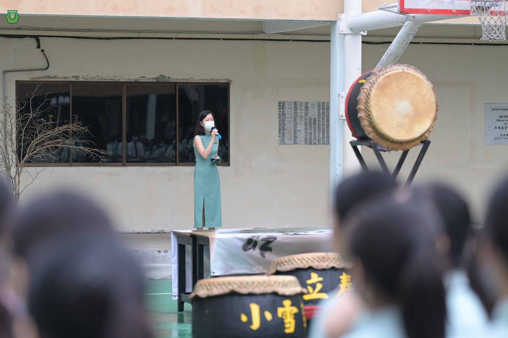
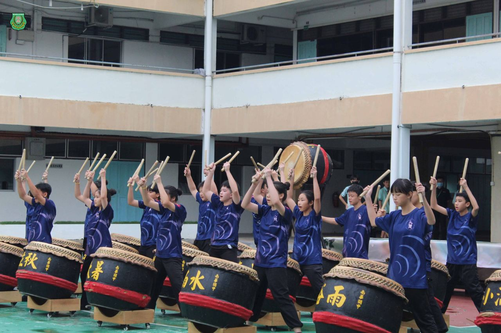
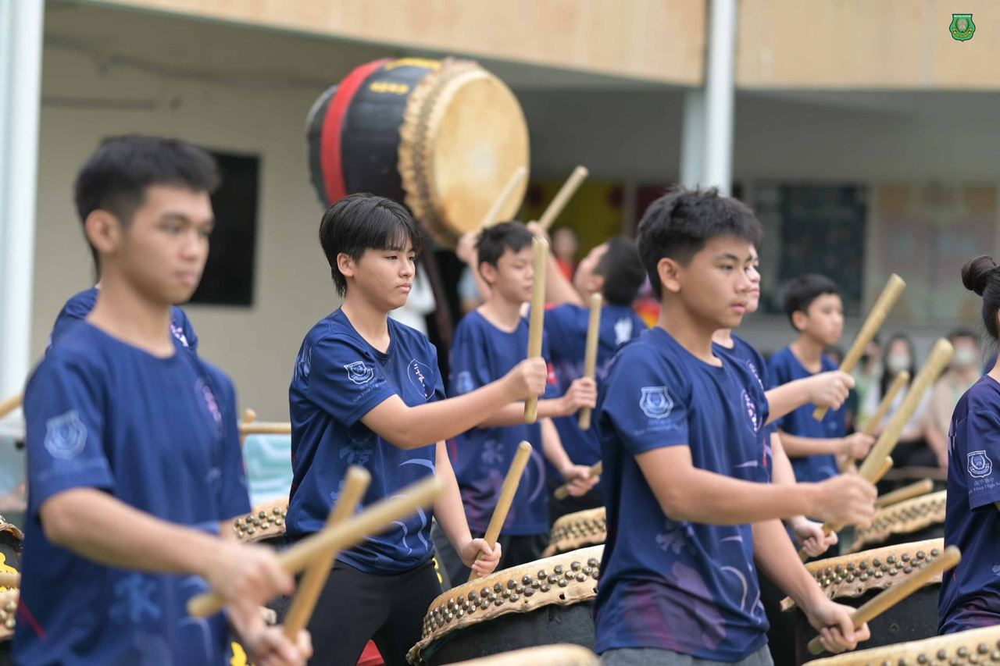
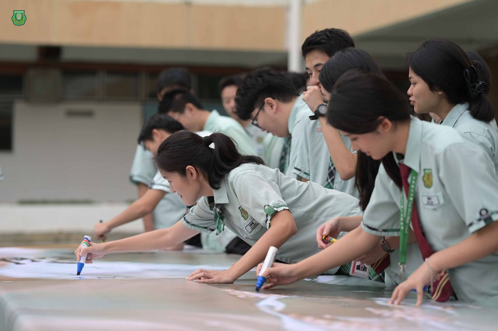

2025年成年礼暨会考祈愿大会
2025年成年礼暨会考祈愿大会
十月清晨，微风和煦，南华独中于近日隆重举行“2025年 #南华独中 #成年礼暨会考祈愿大会”，以庄严与温情并举的仪式，为高三学子祈愿应考顺利，并见证他们迈向人生新阶段的神圣时刻。
活动当日由校长陈丽冰博士带领师生祈福掀开序幕；而“加冠受笄礼·成年风华茂”成年礼则由董事、教师、家长与高三礼生共同参与，见证成长与责任的承传。
#成人不止于年纪，#更立于品格：
仪式伊始，副董事长高级拿督叶绍利致辞时指出，十八岁是从依附走向独立、从被教导走向自觉的重要起点，象征青年在思想与人格上的新生。他以《论语》“十五志于学，三十而立”勉励礼生们珍惜此一转折时刻，理解“成人”二字的深义。“真正的成人，不在于年岁，而在于心智的成熟；不在于外在的形象，而在于内在的觉醒。”
他勉励学生：“从今天起，你们不再只是父母的孩子，更是社会的一份子；不再只是学习的接受者，更是世界的建设者。成人不止于年纪，更立于品格；成才不止于知识，更成于信念。”
叶拿督同时肯定南华独中延续中华文化之精神血脉，以教育落实“立德立人”的理念，让每一位学生在学业与品格中并进，成为有智慧、有温度的南华人。
#加冠受笄，#象征责任与自觉的开始：
校长陈丽冰博士以“十八而立 志达天下”为题发表致辞。她指出，成年礼不仅是一项仪式，更是一种成长的自觉与责任的启程。《礼记·冠义》中的冠笄礼，象征人从稚子迈向成人，从受教走向自律，是自我修养与担当的起点。
陈博士在致词中为礼生加持三段祝词：“弃尔幼志，顺尔成德；敬尔威仪，淑慎尔德；以成厥德”，并期勉学生以成年人的德行为准绳，修身立志，笃行于世。
她以生动比喻提醒学生：“在人生的游戏里，要成为操控者，而非被操控者。分数是皮肤，知识是装备，考场才是你们的战场。”
最后，她寄语高三生珍惜青春、勤于奋斗：“花有重开日，人无再少年。希望你们少一分任性，多一分担当，以坚毅的心志，迎向未来。”
#成为大人，#也要成为温暖的人：
家长联谊会主席叶燕妮女士则以轻松幽默的语调，寄语礼生在人生新阶段学会独立与感恩。她笑言：“从今天起，你们不只是爸妈的孩子，而是能为自己的人生作决定、为世界负责任的大人。”
她提醒同学，成年不只是“长大”的象征，更意味着选择与担当。她鼓励学生带着南华精神——“礼义廉耻，勤俭忠诚”——在未来的路上自信而坚定地走下去。
“南华人不怕难，也不怕输。跌倒了，拍拍灰继续走，因为真正的成长，就是一次次跌倒后的勇气。”
#感恩与祝愿，#情意满堂：
大会中，礼生们以歌曲《时间都去哪儿了》向父母献唱，并在奉茶环节中亲手为父母奉上一杯茶，以最质朴的方式表达多年养育之恩。接着，在“加冠受笄”仪式中，家长亲手为子女系上领带与丝巾，象征责任与成长的交接。
在“成年醴”环节，礼生举杯香槟，共同宣誓迈向成熟与独立；随后由礼生代表刘嘉琦及班导师代表黄俊锦老师发表感言，言语真挚，动人心弦。
#以信念迎考，#以努力致远：
同日上午举行的“会考祈愿大会”则由陈丽冰博士领祈，师生齐聚篮球场。廿四节令鼓与龙狮团的表演象征“鱼跃龙门”，寓意学生奋发向上。
全体考生在祈愿布条上写下目标与期望，并将祈愿纸笺挂上祈愿树，以笔代愿，以字承志，为即将到来的统考与SPM写下最诚挚的祝福。
当天出席者包括有副董事长高级拿督叶绍利、董事总务何添胜先生、家联主席叶燕妮女士以及礼生家长。







